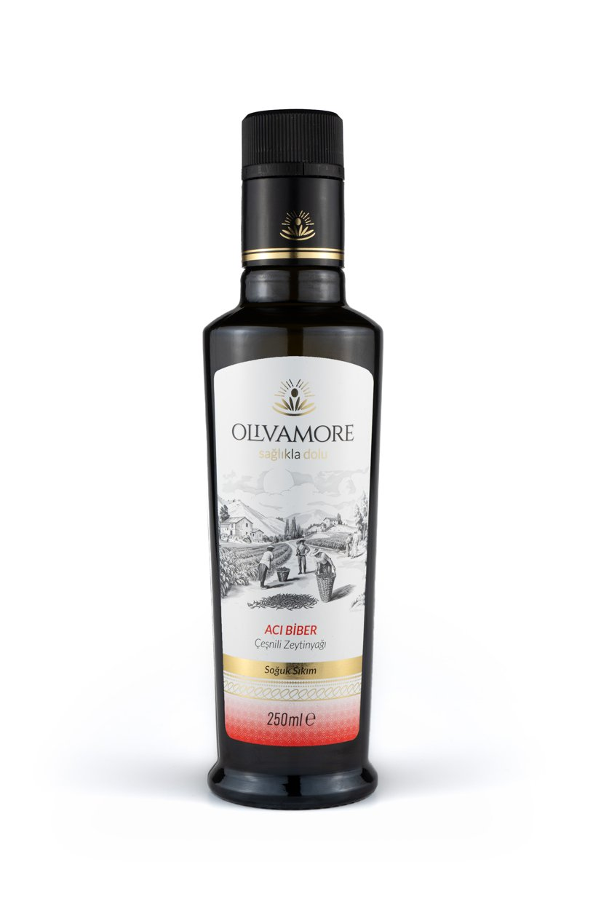

Tarif · Olgun Hasat + Acı Biberli Çeşnili
Acı Biber Bitirişli Mercimek Çorbası
Olgun Hasat çorbayı pişirir; Acı Biberli Çeşnili yağ, aromasını kaybetmeden kâsede son sözü söyler.
35 dk · 4 kişilik

Olgun Hasat çorbayı pişirir; Acı Biberli Çeşnili yağ, aromasını kaybetmeden kâsede son sözü söyler.
35 dk · 4 kişilik
Çorbayı Olgun Hasat ile pişir; acıyı serviste damla damla kur. Böylece hem ısıyı kontrol eder hem aromayı korursun.
